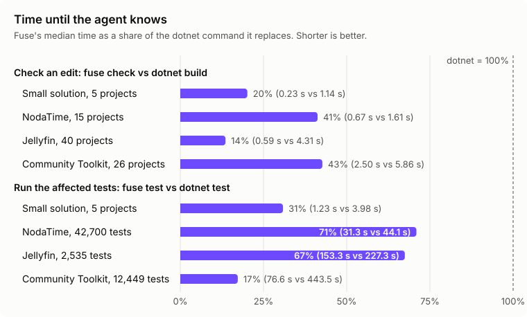

Results
Fuse was measured against the real dotnet build and dotnet test on a small fixture solution and on three open-source repositories: NodaTime, a date and time library; Jellyfin, a media server; and the .NET Community Toolkit, a set of libraries with one source generator per supported compiler version.

Speed and Accuracy
| Small solution (fixture) | NodaTime | Jellyfin | Community Toolkit | |
|---|---|---|---|---|
| Size | 5 projects, 22 tests | 15 projects, 42,700 tests | 40 projects, 2,535 tests | 26 projects, 12,449 tests |
Check an edit vs dotnet build | 0.18 s vs 1.14 s | 0.63 s vs 1.45 s | 0.70 s vs 4.26 s | 0.45 s vs 4.48 s |
| Warm check, body edit (P50 / P95) | 168 / 252 ms | 778 / 933 ms | 239 / 393 ms | 1,266 / 1,667 ms |
| Warm check, signature edit (P50 / P95) | 206 / 2,241 ms | 2,326 / 10,273 ms | 184 / 52,315 ms | 568 / 35,178 ms |
Affected tests vs dotnet test | 1.27 s vs 4.17 s | 32.0 s vs 44.4 s | 165.3 s vs 226.6 s | 65.1 s vs 428.5 s |
| Share of tests run | 15 percent | 80 percent | 22.3 percent | 13.7 percent |
| Compiler errors missed | 0 in 30 cases | 1 in 30 cases | 0 in 30 cases | 0 in 30 cases |
| Errors reported that the build does not have | 0 in 30 cases | 0 in 30 cases | 0 in 30 cases | 0 in 30 cases |
| Failing tests missed | 0 in 10 cases | 0 in 10 cases | 0 in 10 cases | 0 in 10 cases |
| Cases too large to match name by name | 0 | 2 | 0 | 0 |
| Three builds at once, five rounds: lock collisions | 0 | 0 | 0 | 0 |
| Engine memory | 271 MB | 865 MB | 1,019 MB | 2,029 MB |
All measured on the Fuse 5.1.0 source at 14255ab, at fixture 6c4e298, NodaTime fcd80e1, Jellyfin 1d7c6af and Community Toolkit b135626. From these twelve files: correctness-fixture-20260929-0115.json, selection-fixture-20260928-2052.json, latency-fixture-20260928-2053.json, correctness-NodaTime-20260929-0117.json, selection-NodaTime-20260928-2109.json, latency-NodaTime-20260928-2116.json, correctness-Jellyfin-20260929-0124.json, selection-Jellyfin-20260928-2237.json, latency-Jellyfin-20260928-2251.json, correctness-CommunityToolkit-20260929-0130.json, selection-CommunityToolkit-20260929-0031.json and latency-CommunityToolkit-20260929-0049.json.
Reading the Numbers
- On NodaTime the generated changes reach core types, so every test still runs. The saving there comes from skipping MSBuild, not from selecting fewer tests.
- On the Community Toolkit the generated changes reach one area at a time, so a small share of the tests runs: 12,449 tests in the repository, and the selection is per change, not per repository.
- The signature-edit P95 includes the first such edit after the engine starts, which loads every dependent project. On Jellyfin and the Community Toolkit that first edit loads dozens of projects, which is why their P95 is in seconds.
- NodaTime builds with warnings as errors, so each check there also runs the analyzers that can report a warning. That is why its body-edit check is slower than the small solution's.
- When a project has a declaration error, the compiler stops before it binds method bodies or runs analyzers, and after any compiler error it skips its documentation checks. Fuse reports those errors at once; the evals count them as deferred, because the build reports them once the first error is fixed.
- NodaTime's one missed error comes from the build compiling dependent projects against reference assemblies, which leave out private members. It reports "no definition" and one follow-on error where Fuse, compiling against source, reports "inaccessible".
- In two NodaTime cases hundreds of tests fail, and
fuse testlists at most 100 failing names, so those cases cannot be matched name by name.fuse testran 42,689 of 42,700 tests in both. - Timings on this machine vary by about 150 ms between runs of the same build.
How It Was Measured
- Correctness: generated edits that break or keep the build. An error the build reports and Fuse does not is "missed"; the reverse is "contradicted".
- Test selection: generated behavior changes that make tests fail. Failing test names are compared exactly with a full
dotnet testrun. - Latency: repeated warm checks after body and signature edits, through the installed
fusecommand, plus a warmfuse testround and a three-clientfuse buildscenario. - Every result file records the commit of the repository it measured and the Fuse build that measured it, so a number here can be traced to the tree and the binary behind it.
The evals live in evals/Fuse.Evals, and every result file is in evals/results.